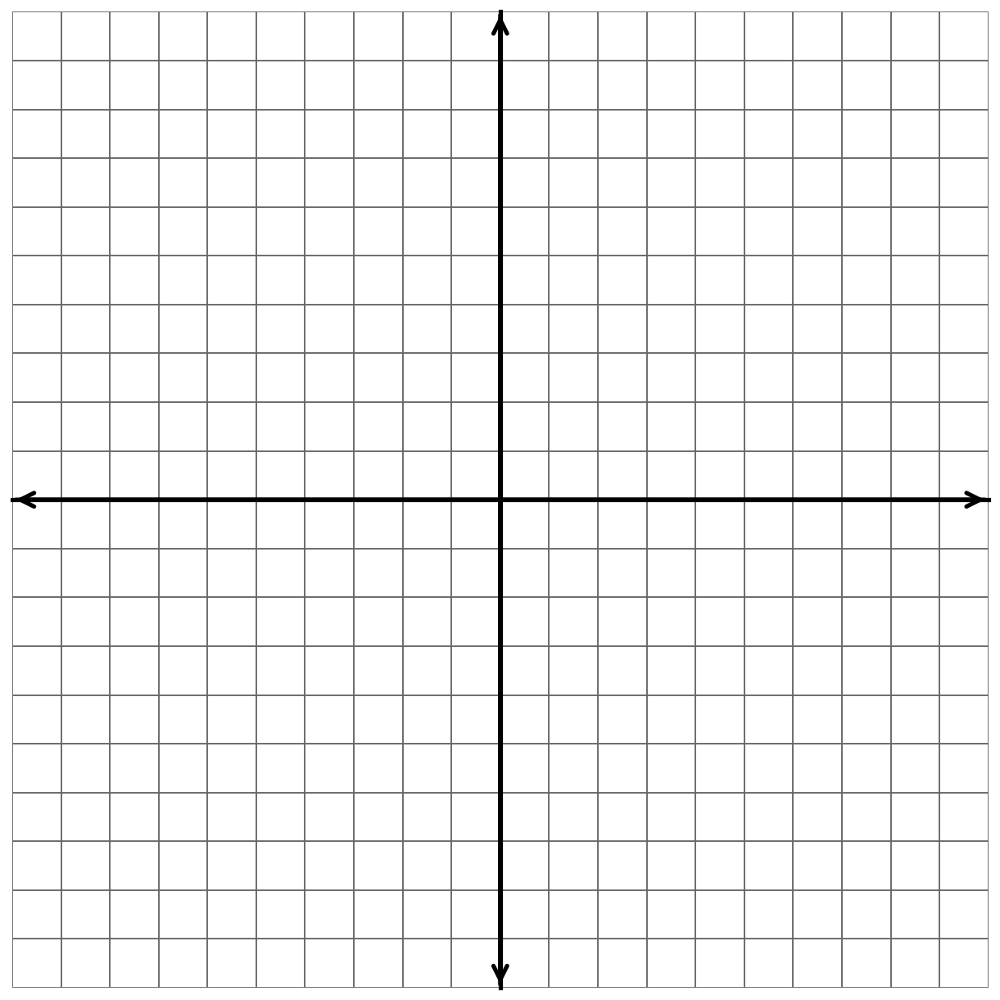

Given \(f(x)=2x^2-3x+1\), evaluate \(f(-2)\). Then solve \(f(x)=1\).
The table shows values of \(g(x)\). Find \(g(3)\) and solve \(g(x)=4\).
| \(x\) | \(-1\) | \(0\) | \(1\) | \(2\) | \(3\) |
|---|---|---|---|---|---|
| \(g(x)\) | \(4\) | \(1\) | \(0\) | \(1\) | \(4\) |
Write the solution set in interval notation and describe whether each endpoint is included.
\[-3 < x \le 5\]
Determine the domain of \(h(x)=\sqrt{x-4}\). Write your answer in interval notation and explain the restriction.
A function has lowest value \(-2\), highest value \(6\), and both endpoint values are included. Write the range in both inequality notation and interval notation.
Describe all transformations applied to \(y=|x|\) to produce \(y=-2|x-3|+4\). Include shifts, reflection, stretch or compression, and vertex location.
Graph \(y=\sqrt{x+2}-3\). Then state the domain and range of the function.

A graph approaches \(5\) from the left of \(x=2\) and approaches \(1\) from the right. Determine \(\lim_{x\to2^-} f(x)\), \(\lim_{x\to2^+} f(x)\), and state whether \(\lim_{x\to2} f(x)\) exists.
At \(x=4\), a graph has an open circle at \((4,\,3)\) and a filled point at \((4,\,-1)\). The graph approaches \(3\) from both sides. State \(\lim_{x\to4} f(x)\) and \(f(4)\), then explain the difference.
A student says the domain of \(p(x)=\dfrac{1}{x-6}\) is all real numbers because every input can be substituted. Explain the mistake and state the correct domain in interval notation.
Given \(f(x)=x^2+4x-5\), evaluate \(f(-3)\). Then solve \(f(x)=-5\).
The table shows values of \(g(x)\). Find \(g(-2)\) and solve \(g(x)=3\).
| \(x\) | \(-3\) | \(-2\) | \(-1\) | \(0\) | \(1\) |
|---|---|---|---|---|---|
| \(g(x)\) | \(8\) | \(3\) | \(0\) | \(-1\) | \(0\) |
Write the solution set in interval notation and describe whether each endpoint is included.
\[-4 \le x < 2\]
Determine the domain of \(h(x)=\sqrt{7-x}\). Write your answer in interval notation and explain the restriction.
A function has range \((-\infty,\,9]\). Write the range in inequality notation and explain what the closed bracket at \(9\) tells you about the graph.
Describe all transformations applied to \(y=x^2\) to produce \(y=\tfrac{1}{2}(x+4)^2-1\). Include shifts, stretch or compression, and vertex location.
Graph \(y=|x-1|+2\). Then state the domain and range of the function.
A graph approaches \(-2\) from the left of \(x=-1\) and approaches \(-2\) from the right. Determine both one-sided limits and state \(\lim_{x\to -1} f(x)\).
At \(x=0\), a graph has an open circle at \((0,\,4)\) and a filled point at \((0,\,7)\). The graph approaches \(4\) from both sides. State \(\lim_{x\to0} f(x)\) and \(f(0)\), then explain the difference.
A student writes \([2,\infty)\) for the set \(x>2\). Explain the mistake and write the correct interval notation.
Given \(f(x)=-x^2+6x-2\), evaluate \(f(4)\). Then solve \(f(x)=-2\).
The table shows values of \(g(x)\). Find \(g(2)\) and solve \(g(x)=-2\).
| \(x\) | \(-2\) | \(-1\) | \(0\) | \(1\) | \(2\) |
|---|---|---|---|---|---|
| \(g(x)\) | \(-2\) | \(1\) | \(2\) | \(1\) | \(-2\) |
Write the solution set in inequality notation and describe whether each endpoint is included.
\[(-5,\,4]\]
Determine the domain of \(h(x)=\dfrac{1}{x+3}\). Write your answer in interval notation and explain the restriction.
A graph has range \([-6,\,\infty)\). Write the range in inequality notation and describe what the closed bracket at \(-6\) tells you about the lowest point of the graph.
Describe all transformations applied to \(y=\sqrt{x}\) to produce \(y=3\sqrt{x-1}+2\). Include shifts, stretch or compression, and starting point.
Graph \(y=(x-2)^2-4\). Then state the vertex, domain, and range of the function.
A graph approaches \(0\) from the left of \(x=3\) and approaches \(4\) from the right. Determine both one-sided limits and state whether \(\lim_{x\to3} f(x)\) exists.
At \(x=-2\), the graph has a filled point at \((-2,\,5)\) and approaches \(5\) from both sides. State \(\lim_{x\to -2} f(x)\) and \(f(-2)\), then explain whether the function is continuous there.
A student says \(\lim_{x\to1} f(x)\) must equal \(f(1)\). Explain why this is not always true and give a specific example using a hole or a jump discontinuity.
Given \(f(x)=3x^2-12x+2\), evaluate \(f(0)\). Then solve \(f(x)=2\).
The table shows values of \(g(x)\). Find \(g(4)\) and solve \(g(x)=0\).
| \(x\) | \(0\) | \(1\) | \(2\) | \(3\) | \(4\) |
|---|---|---|---|---|---|
| \(g(x)\) | \(6\) | \(0\) | \(-2\) | \(0\) | \(6\) |
Write the solution set in interval notation and describe whether each endpoint is included.
\[x \le -1 \text{ or } x > 3\]
Determine the domain of \(h(x)=\sqrt{2x+6}\). Write your answer in interval notation and explain the restriction.
A function has range \((-\infty,\,4)\). Write the range in inequality notation and explain why the endpoint at \(4\) is not included.
Describe all transformations applied to \(y=|x|\) to produce \(y=\tfrac{1}{2}|x+5|-3\). Include shifts, stretch or compression, and vertex location.
Graph \(y=-|x+2|+5\). Then state the vertex, domain, and range of the function.
A graph approaches \(7\) from the left of \(x=0\) and approaches \(7\) from the right. Determine both one-sided limits and state \(\lim_{x\to0} f(x)\).
At \(x=5\), the graph approaches \(-3\) from both sides but the filled point is at \((5,\,2)\). State \(\lim_{x\to5} f(x)\) and \(f(5)\), then explain the difference.
A student says \(y=-(x-4)^2+1\) shifts left 4 and reflects over the \(x\)-axis. Identify each mistake and describe the correct transformations.
Given \(f(x)=x^2-5x+6\), evaluate \(f(1)\). Then solve \(f(x)=0\).
The table shows values of \(g(x)\). Find \(g(-1)\) and solve \(g(x)=5\).
| \(x\) | \(-3\) | \(-2\) | \(-1\) | \(0\) | \(1\) |
|---|---|---|---|---|---|
| \(g(x)\) | \(5\) | \(2\) | \(1\) | \(2\) | \(5\) |
Write the solution set in inequality notation and describe whether each endpoint is included.
\[[-2,\,6)\]
Determine the domain of \(h(x)=\dfrac{1}{x^2-9}\). Write your answer in interval notation and explain all restrictions.
A function has no maximum value and has a minimum value of \(1\) that is not achieved. Write the range in both inequality notation and interval notation.
Describe all transformations applied to \(y=x^2\) to produce \(y=-3(x-1)^2+6\). Include shifts, reflection, stretch or compression, and vertex location.
Graph \(y=\sqrt{x-3}+1\). Then state the domain and range of the function.
A graph approaches \(-4\) from the left of \(x=2\) and approaches \(-4\) from the right. Determine both one-sided limits and state \(\lim_{x\to2} f(x)\).
At \(x=-1\), a graph has an open circle at \((-1,\,0)\) and a filled point at \((-1,\,6)\). The graph approaches \(0\) from both sides. State \(\lim_{x\to -1} f(x)\) and \(f(-1)\), then explain the difference.
A student solves \(f(x)=4\) from a table by finding the row where \(x=4\). Explain the mistake and describe what the student should look for instead.
Given \(f(x)=-2x^2+8x+1\), evaluate \(f(3)\). Then solve \(f(x)=1\).
The table shows values of \(g(x)\). Find \(g(0)\) and solve \(g(x)=1\).
| \(x\) | \(-2\) | \(-1\) | \(0\) | \(1\) | \(2\) |
|---|---|---|---|---|---|
| \(g(x)\) | \(1\) | \(-2\) | \(-3\) | \(-2\) | \(1\) |
Write the solution set in interval notation and describe whether each endpoint is included.
\[x < -6 \text{ or } x \ge 2\]
Determine the domain of \(h(x)=\sqrt{10-2x}\). Write your answer in interval notation and explain the restriction.
A function has maximum value \(8\) with no minimum value, and the maximum is achieved. Write the range in both inequality notation and interval notation.
Describe all transformations applied to \(y=\sqrt{x}\) to produce \(y=-\sqrt{x+4}+2\). Include shifts, reflection, and starting point.
Graph \(y=(x+1)^2-5\). Then state the vertex, domain, and range of the function.
A graph approaches \(2\) from the left of \(x=-3\) and approaches \(-6\) from the right. Determine both one-sided limits and state whether \(\lim_{x\to -3} f(x)\) exists.
At \(x=1\), the graph approaches \(9\) from both sides but \(f(1)\) is undefined. State \(\lim_{x\to1} f(x)\) and \(f(1)\), then explain what type of discontinuity this represents.
A student writes \((-\infty,\,3)\) as the interval notation for \(x \le 3\). Explain the mistake and write the correct interval notation.